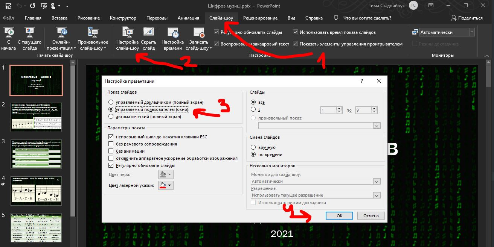

Цей сайт може допомогти, якщо у вас виникли певні проблеми з конференцією ZOOM.
На даний момент вирішено такі питання:
Не запускається демонстрація / Не знаю як
Нема звуку у демонстрації
Як демонструвати екран правильно.
- Зайти на конференцію з комп'ютера. ( якщо я без комп'ютера )
-
Правильно підготувати презентацію PowerPoint.
(
якщо я без PowerPoint
)
- Відкрити презентацію.
- Вибрати пункт "Слайд шоу" => "Настройка слайд шоу"
- Вибрати опцію "Показ слайдов" => "Управляемый пользователем (окно)" та натиснути "Ок". Це дозволить запускати презентацію у окремому вікні. 
- Запустити презентацію.
- Натиснути "Демонстрація екрану" або "Совмесное использование".
- Вибираємо презентацію, вмикаємо звук та натискаємо "Совмесное использование".
З комп'ютера працювати краще. Держіть пристрій горизонтально та зазделегіть запустіть презентацію. Натисніть "Совмесное использование". Звук вмикається так:

Для презентацій бажано використовувати PowerPoint. З Гугл Диску можна завантажити файл, але якщо нема, як його запустити доведеться:
- До початку демонстрації запустити презентацію.
- Щоб повернутися до Зуму, натиснути клавішу Windows, тоді поверх презентації внизу поверенеться панель вікон.
- Натиснути на логотип Зуму та запустити демонстрацію, як сказано вище.
Що робити, якщо у презентації нема звуку.
Для трансляції звуку необхіно вибрати відповідну опцію.
Для комп'ютерів (Windows/MacOS):
Для телефонів (Android):
Що робити, якщо не запускається конференція.
Потрібно визначити, в чому проблема:
- Якщо ви бачите подібний напис і не запускається конференція, то натисніть на синю кнопку "Запустить конференцию". Якщо не працює так, то у вас не встановлено ZOOM. ( встановити )
- Подібне зображення означає, що конференція ще не почалася. Перевірте посилання, назву конференції або час. Можливо у організаторів технічні проблеми.
- Схожий напис означає, що конференцію вже почали, але вас ще не пускають на неї. Можливо зараз вирішуються якісь технічні питання, або організатори чекають більшої кількості людей.